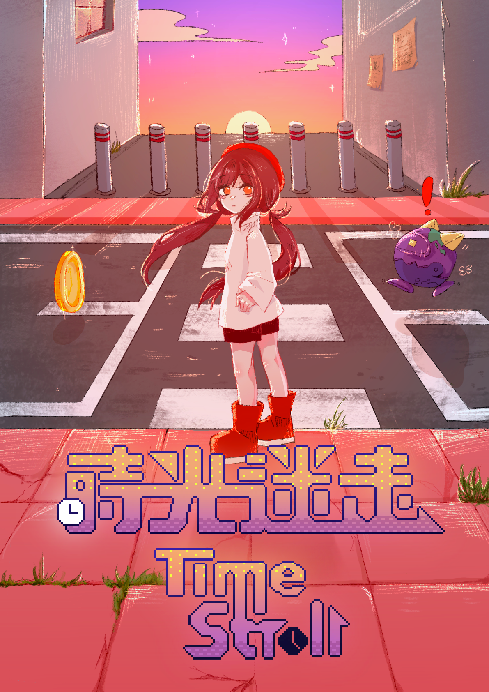
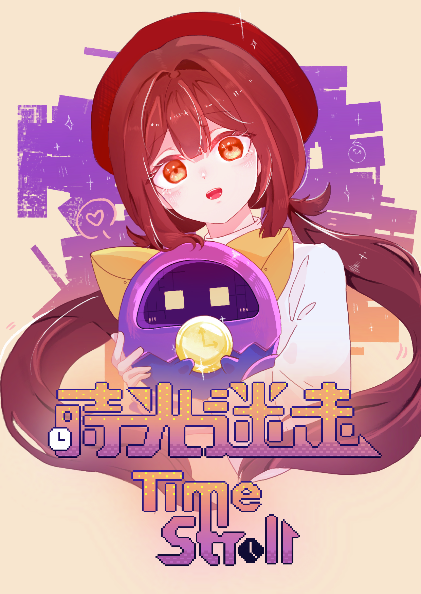
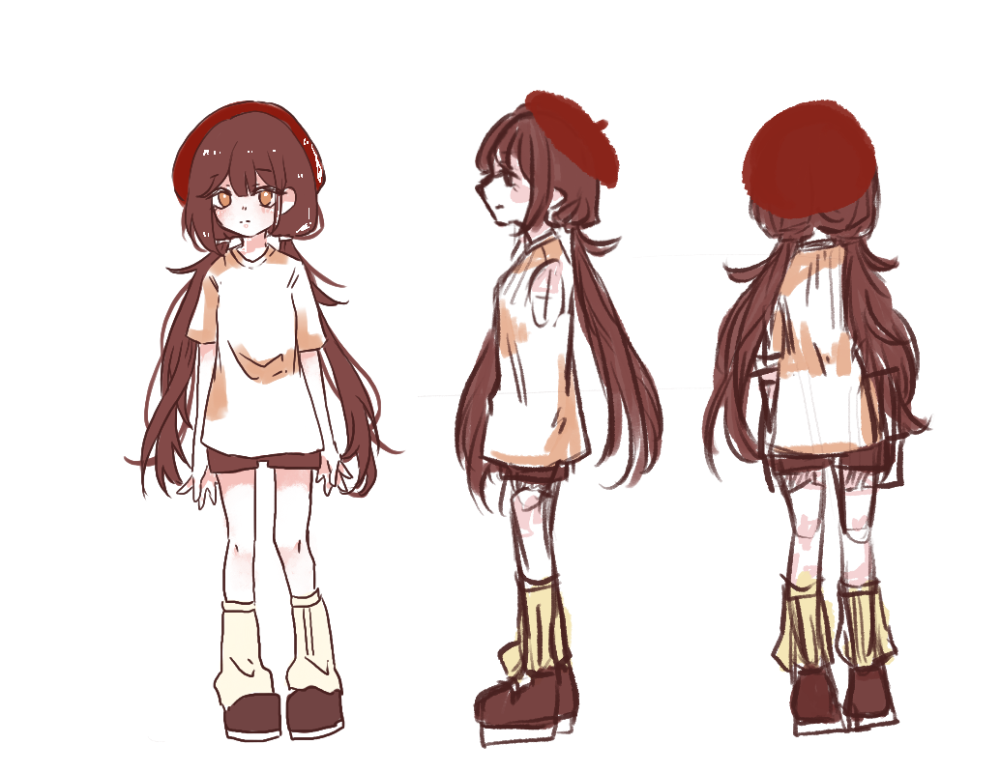
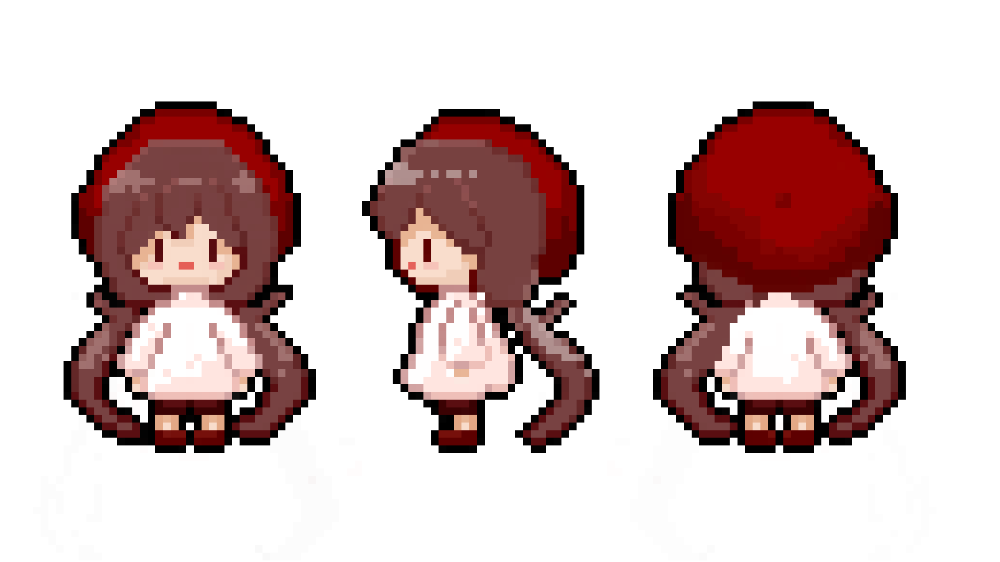
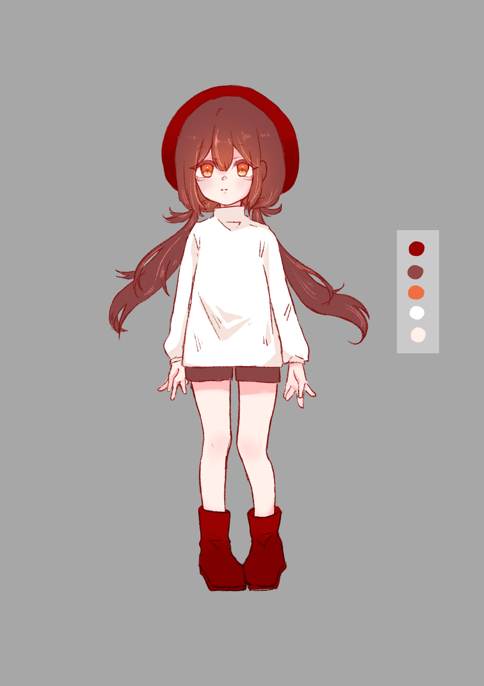

專案概述
《時光迷走Time Stroll 》是一款單人益智解謎遊戲，玩家必須操控主角莉莉，並且善用時間倒轉的能力來克服重重困難。莉莉發現自己被困在了一個充滿怪物和機關的現代時空中，但一切是那麼熟悉卻又截然不同，日常的街道佈滿怪物。但同時莉莉發現她擁有一種特殊的能力：能夠時間倒轉。玩家可以操控莉莉在倒轉事件中自由移動，也可以不做任何操作讓莉莉跟著時間倒轉返回到事件發生前。
得獎與入圍紀錄
個人負責部分展示
1. 主視覺與宣傳圖繪製
施工中...


2. 角色設計
因為設定是普通的人，所以整體都是比較簡單的服裝，白色長袖配上短褲，然後紅色的貝雷帽還有雙馬尾是她的大特徵，整體都是用暖色調來繪製


